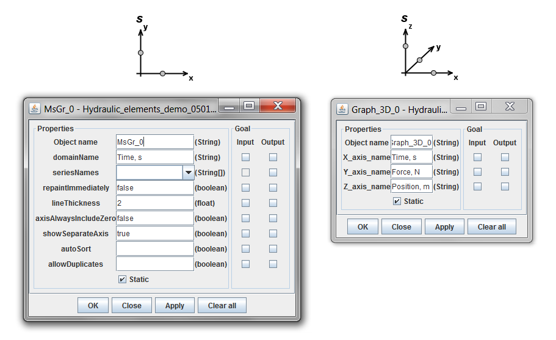

<div class="panel panel-default">
  <div class="panel-body">
 <h1>Output elements</h1>
<p>MsGr  - drawing multi series graphs</p>
<ul><li>X axis port is an ordinary port, in dynamic simulations it is used for time</li>
<li>Y axis port is a multiport. Each variable connected to this port gives a separate graph and a separate axis provided with values to be drawn.</li></ul>
<p>Graph_3D  -  drawing 3-dimensional surfaces</p>
<ul><li>X axis port is an ordinary port, in dynamic simulations it is used for time</li>
<li>Y axis port is an ordinary port. The port must be connected to output port of dyn_stat_Source.</li>
<li>Z axis port is an ordinary port. The port must be connected to variable to be drawn on Z axis.</li></ul>
<p><strong>NB!  Java 3D package ( tested with Java 3D 1.5.1)  must be installed to use Graph_3D  element.</strong></p>
<p>Both MsGr  and Graph_3D  must be set Static in  Properties window.</p>

 
<p>Properties for MsGr:</p>
<ul>	<li>domainName -          X axis name</li>
<li>	seriesName -             Y axis names</li>
<li>	repaintImmediately - repaint graph after adding each point (default "false"),
		        	         the feature requires a lot of time resources)</li>
<li>	lineThickness -          line thickness (1, 2, ...)</li>
<li>	axisAlwaysIncludeZero - "false"</li>
<li>	showSeparateAxis -  show individual axis for each graph (default "true")</li>
<li>	autoSort - "false"</li>
<li>	allowDuplicates - "true"</li></ul>

<p>Properties for Graph_3D:</p>
<ul><li>	X_axis_name -  X axis name</li>
<li>	Y_axis_name -  Y axis name</li>
<li>	Z_axis_name  -  Z axis name</li></ul>


  </div>
  </div>